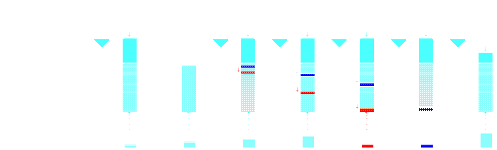
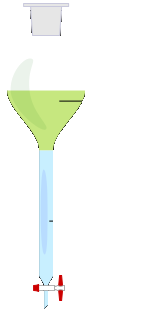
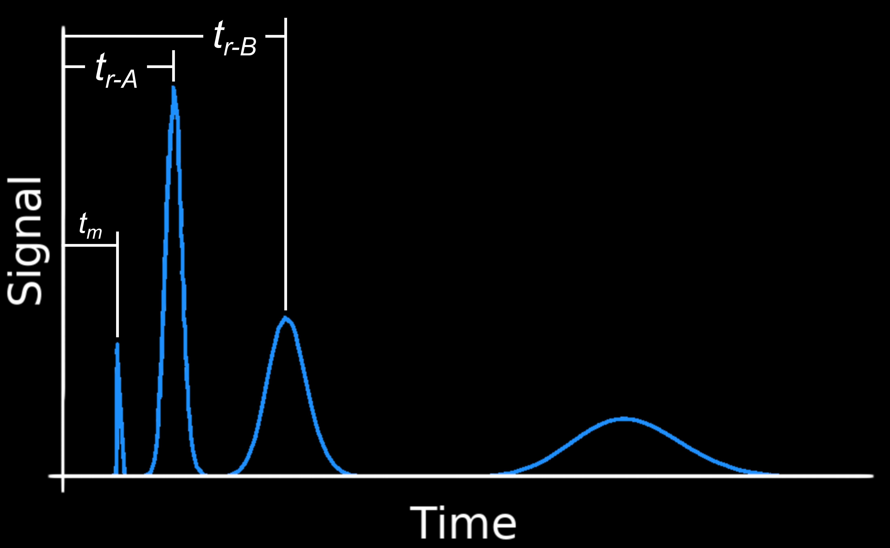

layout: true --- <h2 style = "text-align: right; font-weight: bold;">13.1.1</h2> <h1 style = "text-align: left; font-weight: bold; margin-left: 40px;">Chromatography</h1> --- class: center **Chromatography** separates a sample using a *mobile phase* and *stationary phase*.   --- class: center  $$ \ce{C\_{aq} <=> C\_{org}} $$ .image-credit[[Shakki via Wikimedia](https://commons.wikimedia.org/w/index.php?curid=3343371) / [CC BY 3.0](https://creativecommons.org/licenses/by-sa/3.0/)] --- class: center $$ \ce{C\_{aq} <=> C\_{org}} \text{, so } K\_D = \frac{\ce{C\_{org}}}{\ce{C\_{aq}}} $$ .image-credit[[Shakki via Wikimedia](https://commons.wikimedia.org/w/index.php?curid=3343371) / [CC BY 3.0](https://creativecommons.org/licenses/by-sa/3.0/)] --- ### Example: Caffeine extraction from coffee (Granger Ex. 15.1) 100 ml of coffee containing 1.00 mg caffeine. How much is extracted to 250 ml $\ce{CHCl3}$? $K_D = 8.8$. > Step 1: ICE Table! | | Caf (aq) | Caf (org) | | ----- | ----- | ----- | | **I**nitial (mg) | 1.00 | 0.00 | | **C**hange (mg) | -$x$ | $x$ | | **E**quilibrium (mg) | 1.00-$x$ | $x$ | --- ### Example: Caffeine extraction from coffee (Granger Ex. 15.1) 100 ml of coffee (aq) containing 1.00 mg caffeine. How much is extracted to 250 ml $\ce{CHCl3}$? $K_D = 8.8$. > Step 2: Substitue in equillibrium equation (and account for volume difference) $$ K\_D = \frac{\ce{C\_{org}}}{\ce{C\_{aq}}} $$ $$ 8.8 = \frac{ \left(\frac{x}{250} \right)\_{org} }{ \left(\frac{(1.00-x)}{100} \right)\_{aq} } $$ --- ### Example: Caffeine extraction from coffee (Granger Ex. 15.1) 100 ml of coffee (aq) containing 1.00 mg caffeine. How much is extracted to 250 ml $\ce{CHCl3}$? $K_D = 8.8$. > Step 3: Solve for $x$ $$ 8.8 = \frac{ \left( \frac{x}{250} \right)\_{org} }{ \left(\frac{(1.00-x)}{100} \right)\_{aq} } $$ $$ x = 0.956 \text{ mg (in org phase), } \therefore 0.04 \text{ mg in aq phase.} $$ --- class: center <div style="margin-top: 100px;"></div> Chromatography can be thought of as a multistage extraction! $$ K\_D = \frac{C\_s}{C\_M} $$ -- Components with larger $K\_D$ will spend more time in the column! --- class: center A **chromatogram** is a plot of *signal* ($y$) vs *time* ($x$).  --- class: center The *retention factor* is constant for any given chemical run with a defined *chromatographic system*.  $$ \text{retention factor } = k\_r = \frac{ (t\_r - t\_{m}) }{ t\_{m} } $$ --- class: center The *retention factor* is constant for any given chemical run with a defined *chromatographic system*. $$ k\_r = \frac{ (t\_r - t\_{m}) }{ t\_{m} } = K\_D \frac{ V\_s }{ V\_m } $$ --- class: center Peaks are gaussian with a mean, $\mu$, and standard deviation, $\sigma$. $$ W\_{base} = 4\sigma \text{, } W\_{FWHM} = 2.355 \sigma $$ --- class: center *Resolution* describes how well two peaks can be separated in time. $$ R\_s = \frac{ (t\_{r\_{2}} - t\_{r\_{1}} ) }{0.5( W\_{B\_{2}} + W\_{B\_{1}} ) } $$ --- class: center Chromatographic resolution is often discussed in terms of *theoretical plates*.  .image-credit[[Theresa knott via Wikimedia](https://commons.wikimedia.org/w/index.php?curid=3343371) / [CC BY 3.0](https://creativecommons.org/licenses/by-sa/3.0/)] --- class: center Chromatographic resolution is often discussed in terms of *theoretical plates*. $$ N\_{t} = \frac{L}{H} = \frac{ \text{column length} }{ \text{height of theoretical plate} } $$ -- $$ N\_{t} = \frac{L}{H} = \frac{ t^2\_r }{ \sigma^2 } $$ -- $$ N\_t = \left( \frac{4 t\_r}{W\_b} \right)^2 \text{ or } N\_t = \left( \frac{2.335 t\_r}{W\_h} \right)^2 $$ --- class: center *Band broadening* can be understood with the *van Deemter equation*. $$ H = A + \frac{B}{v} + Cv $$ ??? $$ H = A + \frac{B}{v} + Cv $$ where: - $H$ = height of equivalent theoretical plate - $A$ = eddy diffusion coefficient - $B$ = longitudinal diffusion coefficient - $v$ = linear flow velocity - $C$ = rate constant for mass transport --- class: center *Band broadening* can be understood with the *van Deemter equation*. *Resolution always gets worse as time increases!* --- <h2 style = "text-align: right; font-weight: bold;">13.1.2</h2> <h1 style = "text-align: left; font-weight: bold; margin-left: 40px;">Quantitative Chromatography</h1> --- <h2 style = "text-align: right; font-weight: bold;">13.2.1</h2> <h1 style = "text-align: left; font-weight: bold; margin-left: 40px;">Liquid Chromatography</h1> <!-- =============================================================================== -->